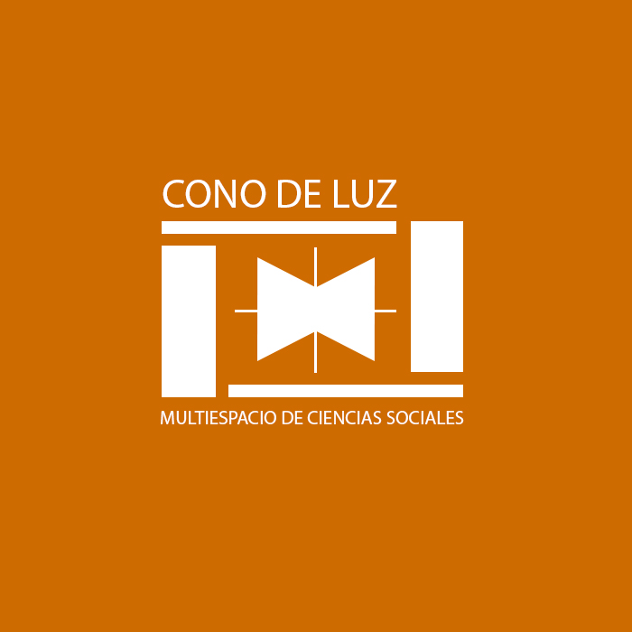

Podcast y entrevistas
Volver al inicio
Cono de Luz: El Podcast | Episodio 3: Innovación y Sociedad
Cono de Luz: El Podcast | Episodio 2: Día de la sociología
Cono de Luz: El Podcast | Episodio 1: IA y Sociología
© 2023 Cono de Luz. Desarrollado por
Jess Garriga
.